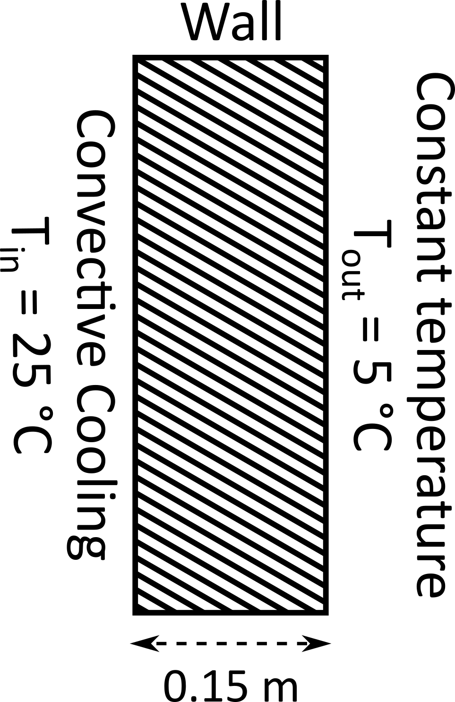

In this tutorial, we study steady-state heat flow through a wall. We can simplify this problem to one dimension considering that the wall's width and height are much larger than its thickness, and the temperature varies only across the thickness direction.
Steady heat conduction in one dimension is described by the Laplace equation: \(\frac{d^2T}{dx^2} = 0\), where \(T\) signifies the temperature values. The above is used to find the temperature distribution within common engineering components like house walls.
The above schematic illustrates the problem domain and outlines the associated boundary conditions. Our objective is to determine the temperature distribution within the wall itself. In this problem, a convection boundary condition, implemented as Robin type, is applied at the inner side of the wall (\(x = 0\)). The latter is expressed as \(\frac{dT}{dx}|_{x=0}=-{\frac{h}{k}}(T-T_{in})\), where \(h\) is the heat transfer coefficient, \(k\) the thermal conductivity, and \(T_{in}\) is the internal temperature of the house (room temperature). We assume here that \({\frac{h}{k}}\) = 1 m-1 and \(T_{in}\) = 25 °C. At the outer side of the wall (\(x = W\), where \(W\) = 0.15 m, is the width of the wall), we apply a constant temperature (\(T_0\) = 5 °C) boundary condition, representing the outdoor temperature, implemented as Dirichlet type in the finite element code.
Below is a demonstration of how to use the FEAScript library to solve this stationary heat transfer problem in your web browser. You only need a simple HTML page to run this example where the following code snippets should be included. First, we should load the required external libraries:
<head> <!-- ...head region... --> <script src="https://cdnjs.cloudflare.com/ajax/libs/mathjs/5.0.0/math.min.js"></script> <script src="https://cdnjs.cloudflare.com/ajax/libs/plotly.js/2.27.0/plotly.min.js"></script> <!-- ...continue of head region... --> </head>
We should then define the problem parameters, such as the solver type, the geometry configuration, and the boundary conditions. This is performed using JavaScript objects directly in the HTML file:
<body>
<!-- ...body region... -->
<script type="module">
// Import FEAScript library
import { FEAScriptModel, plotSolution, printVersion } from "https://core.feascript.com/dist/feascript.esm.js";
window.addEventListener("DOMContentLoaded", (event) => {
// Print FEAScript version in the console
printVersion();
// Create and configure model
const model = new FEAScriptModel();
model.setSolverConfig("solidHeatTransferScript");
model.setMeshConfig({
meshDimension: "1D",
elementOrder: "linear",
numElementsX: 10,
maxX: 0.15,
});
// Apply boundary conditions
model.addBoundaryCondition("0", ["convection", 1, 25]);
model.addBoundaryCondition("1", ["constantTemp", 5]);
// Solve
model.setSolverMethod("lusolve");
const { solutionVector, nodesCoordinates } = model.solve();
// Plot results
plotSolution(
solutionVector,
nodesCoordinates,
model.solverConfig,
model.meshConfig.meshDimension,
"line",
"solutionPlot"
);
});
</script>
<!-- ...continue of body region... -->
</body>
After solving the case, the results are demonstrated as a line plot. To visualize it, include an HTML container where the plot will render:
<body> <!-- ...body region... --> <div id="solutionPlot"></div> <!-- ...continue of body region... --> </body>
The "solutionPlot" is the id of the div where the plot will be rendered. This id is passed as an argument to the "plotSolution" function to specify the target div for the plot.
Below is the 1D line plot of the computed temperature distribution along the wall thickness. This plot is generated in real time using FEAScript. You can find a Node.js implementation of this tutorial in the example directory.